8~6위: 출발점, 사용성, 움직임
이 쇼츠는 AI에게 화면 디자인을 맡길 때 생기는 막힘을 여덟 가지로 나눠요. 그리고 막힘마다 깃허브에 올라온 스킬이나 자료를 하나씩 붙여 8위부터 1위까지 소개해요. 영상 마지막에 나오는 순위표를 먼저 보면 전체가 한눈에 들어와요. 왼쪽 열이 1~4위, 오른쪽 열이 5~8위예요.
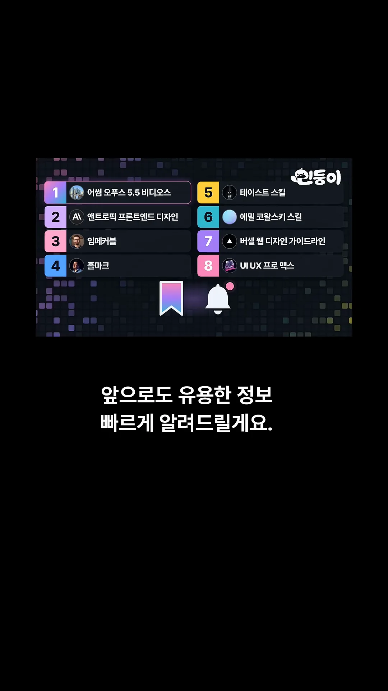
순위마다 '이런 고민이 있다면'으로 시작해서 '이걸 쓰면 이렇게 바뀐다'로 끝나는 같은 틀로 설명해요. 그 틀대로 정리하면 이래요. 저장소 이름은 각 순위의 제목 화면에 나온 것을 옮겼어요.
| 순위 | 이름 (저장소) | 이런 고민일 때 | 하는 일 |
|---|---|---|---|
| 8 | UI UX Pro Maxnextlevelbuilder/ui-ux-pro-max-skill | 색과 폰트 고르기부터 막혀요 | 서비스에 맞는 스타일·색·폰트 조합을 제안해요 |
| 7 | 버셀 웹 디자인 가이드라인vercel-labs/agent-skills | 예쁜데 막상 쓰기 불편해요 | 키보드 조작, 오류 안내 같은 사용성을 점검해요 |
| 6 | 에밀 코왈스키 스킬emilkowalski/skills | 움직임이 끊겨서 싸 보여요 | 애니메이션 타이밍과 반응을 다듬어요 |
| 5 | 테이스트 스킬Leonxlnx/taste-skill | 디자인을 어떻게 지시할지 몰라요 | 방향 → 이미지 → 브라우저 확인 순서로 일하게 해요 |
| 4 | 홀마크Nutlope/hallmark | AI가 늘 같은 구조만 만들어요 | 페이지 뼈대부터 다르게 설계하게 해요 |
| 3 | 임페커블pbakaus/impeccable | 어딘가 촌스러운데 이유를 몰라요 | 문제를 진단하고 글씨·여백·색을 고쳐요 |
| 2 | 앤트로픽 프론트엔드 디자인anthropics/skills | '예쁘게'만으론 분위기가 안 나와요 | 폰트·색·배치에 일관된 방향을 세워요 |
| 1 | 어썸 오퍼스 5.5 비디오스yihui-dev/awesome-opus5-5-videos | 이런 영상을 어떻게 시켰는지 궁금해요 | Claude로 만든 영상과 프롬프트를 모아 둬요 |
8위 UI UX Pro Max — 빈 화면의 출발점
색과 폰트를 고르는 단계에서부터 손이 멈출 때 쓰는 스킬이에요. 화면 위쪽 입력창에 '카페 주문 앱'이라고 넣자, 아래에 카드 세 장이 차례로 채워져요. 카드 오른쪽 위 숫자는 스킬이 가진 후보 수예요. 스타일 79개 중 Warm Minimal, 팔레트 192개 중 Espresso, 폰트 조합 74개 중 Pretendard가 골라졌어요.

고른 조합을 적용하면 바로 이런 화면이 나와요. 커피 사진을 쓴 모바일 화면 두 장과, 오른쪽에 팔레트 색 점과 폰트 견본을 정리한 시안이 함께 있어요. 영상은 이걸 '디자인 출발점'이라고 불러요. 완성품이 아니라 고민을 시작할 바탕이라는 뜻이에요.
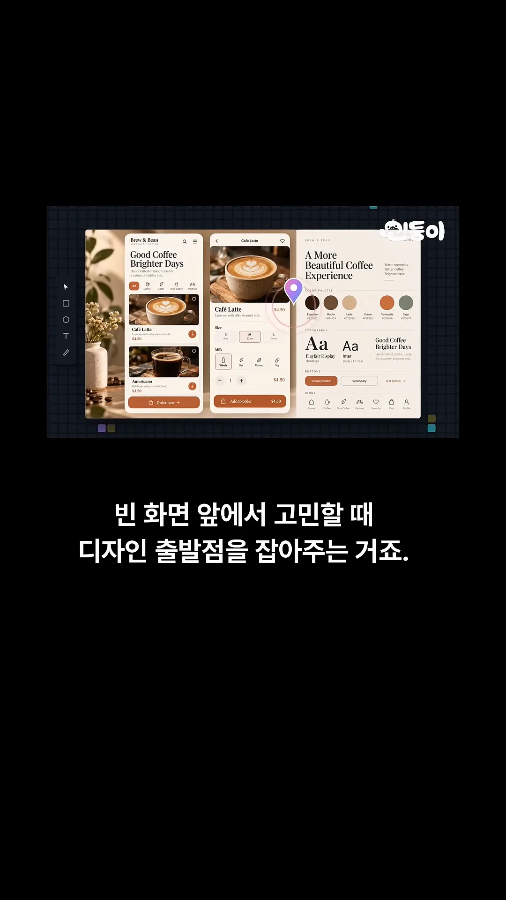
7위 버셀 웹 디자인 가이드라인 — 쓰기 편한지 점검
보기엔 예쁜데 막상 쓰려면 불편한 사이트를 잡는 스킬이에요. 예시 화면은 가입 폼이에요. 왼쪽의 Tab, Enter 키로만 폼을 움직여 보고, 이메일 칸에 'minsu@'처럼 덜 쓴 주소를 넣었을 때 칸이 빨갛게 바뀌며 오류를 알려 주는지 확인해요.
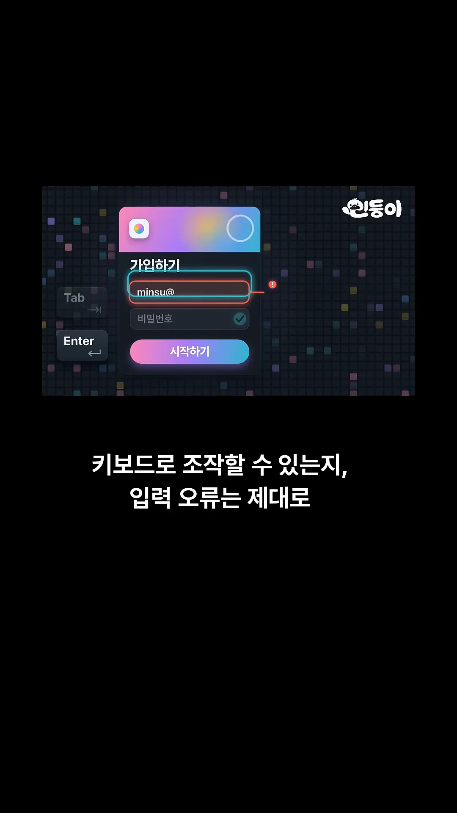
점검 범위는 폼만이 아니에요. 왼쪽 체크리스트에 접근성, 포커스, 폼, 애니메이션, 타이포그래피, 이미지, 다크 모드, 다국어 여덟 갈래가 있어요. 오른쪽에 깨알같이 보이는 영어 목록이 실제 규칙이에요. 아래쪽 출처 표기는 vercel-labs/web-interface-guidelines예요.

6위 에밀 코왈스키 스킬 — 움직임의 손맛
버튼이나 메뉴가 툭툭 끊기며 움직여서 싸구려처럼 느껴질 때 쓰는 스킬이에요. 왼쪽 그래프가 그 상태를 보여 줘요. 매끄러운 곡선이 아니라 계단처럼 뚝뚝 끊긴 선이에요. 오른쪽은 그렇게 움직이는 메뉴 예시예요.
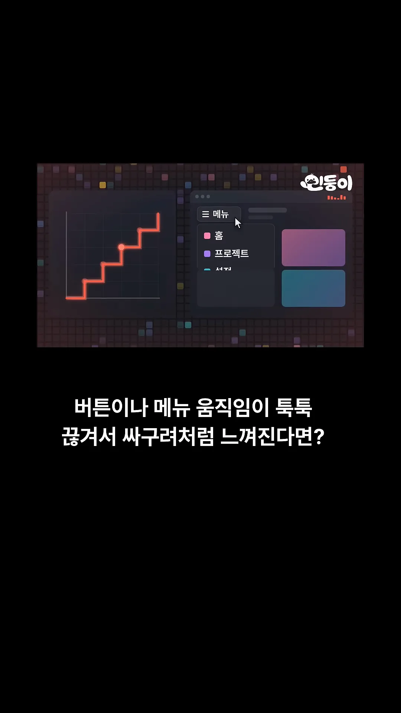
이 저장소에는 스킬이 여러 개 들어 있어요. 화면에 강조된 것은 맨 위 emil-design-eng(중심 스킬)과 review-animations(애니메이션을 엄격하게 검토)예요. 그 사이에 처음부터 애니메이션을 만드는 animate, React Native와 Expo용 animate-expo도 보여요.
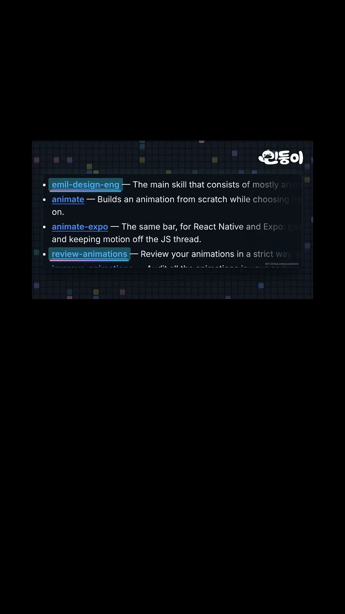
5~4위: 지시하는 법과 페이지 뼈대
5위 테이스트 스킬 — '감각 있게'를 작업 순서로
디자인을 어떻게 지시해야 할지 모를 때 쓰는 스킬이에요. '감각 있게', '고급스럽게'라고 써 봐야 AI도 뭘 해야 할지 모르니까요. 이 스킬은 먼저 시각적인 방향을 정하게 해요. 화면의 카드 세 장이 그 후보예요. 어두운 배경, 하늘색 배경, 밝은 베이지 배경에 각각 다른 색 점과 이미지가 붙어 있어요.
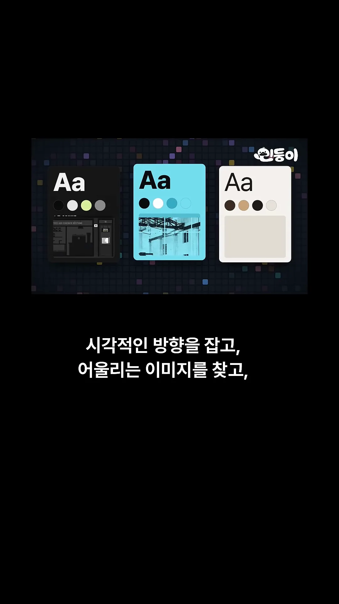
방향을 정하고 이미지를 찾은 다음에는 브라우저에서 결과를 직접 확인하게 해요. 같은 'Monday is roast day' 페이지를 데스크톱, 태블릿, 휴대폰 크기로 띄우고, 제목 부분에 동그라미를 친 뒤 체크 표시를 달아요.

영상은 이 과정을 두고 '감각 있게 해 줘'를 작업 과정으로 바꿔 준다고 정리해요. 막연한 형용사 하나가 방향 정하기, 이미지 찾기, 브라우저 확인이라는 세 단계가 되는 거예요.
4위 홀마크 — 같은 뼈대에서 벗어나기
AI에게 랜딩 페이지를 맡기면 비슷한 결과가 자주 나와요. 화면에 겹쳐 놓은 페이지들이 그 예예요. 전부 'Build faster with AI' 같은 큰 제목, 버튼 하나, 그 아래 카드 세 개라는 같은 구조예요. 배경색만 분홍, 초록, 보라로 달라요.
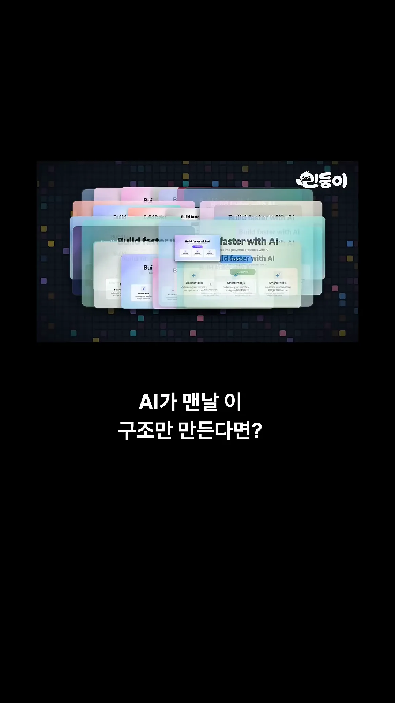
홀마크는 이렇게 색만 바꾼 복붙 사이트에서 벗어나고 싶을 때 써요. 색이나 폰트를 손보기 전에, 페이지 뼈대부터 다르게 설계하게 하는 게 핵심이에요. 아래 화면에서 맨 앞 페이지가 영상이 말한 '제목 아래 카드 세 개' 구조를 가장 또렷하게 보여 줘요.

3~1위: 다듬기, 공식 스킬, 참고 자료
3위 임페커블 — '뭔가 별로야'를 고칠 거리로
이미 만든 사이트가 어딘가 촌스러운데 이유를 모를 때 쓰는 스킬이에요. 예시는 Bean House라는 카페 사이트예요. 무지개색 로고, 손글씨 폰트, 빽빽한 메뉴판이 한 화면에 몰려 있고, 곳곳에 물음표가 떠 있어요. 뭔가 이상하긴 한데 무엇이 문제인지 짚지 못하는 상태예요.
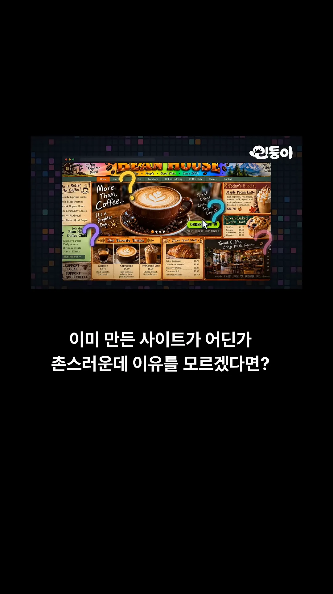
위쪽에 /impeccable layout 명령을 넣자 물음표가 빨간 느낌표로 바뀌어요. 로고, 메인 문구, 오늘의 메뉴, 주문 버튼처럼 문제가 있는 자리를 하나씩 집어 주는 거예요. 음료 사진 사이에는 보라색 막대가 그어져 간격을 재고 있어요. 진단이 끝나면 글씨, 여백, 색을 다듬는 단계로 넘어가요.
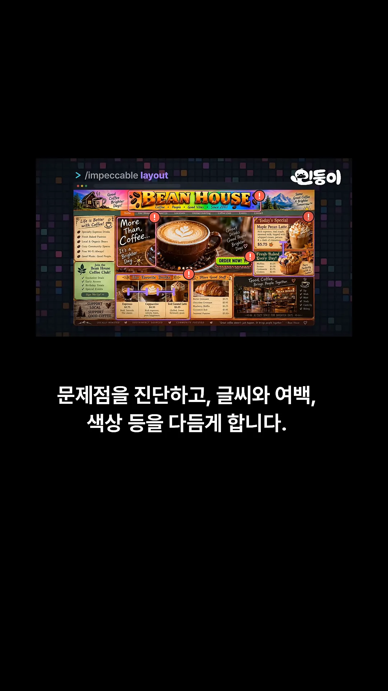
2위 앤트로픽 프론트엔드 디자인 — 공식 스킬로 방향 잡기
'예쁘게 만들어줘'라고만 하면 결과가 그때그때 달라요. 화면 아래 입력창에 그 말을 넣자, 같은 Bean House인데도 흑백 대비가 강한 'GOOD COFFEE. NO NONSENSE.' 페이지와 분홍빛 아늑한 페이지가 동시에 나와요. 둘 다 나쁘진 않지만, 원하는 분위기를 고를 수는 없어요.
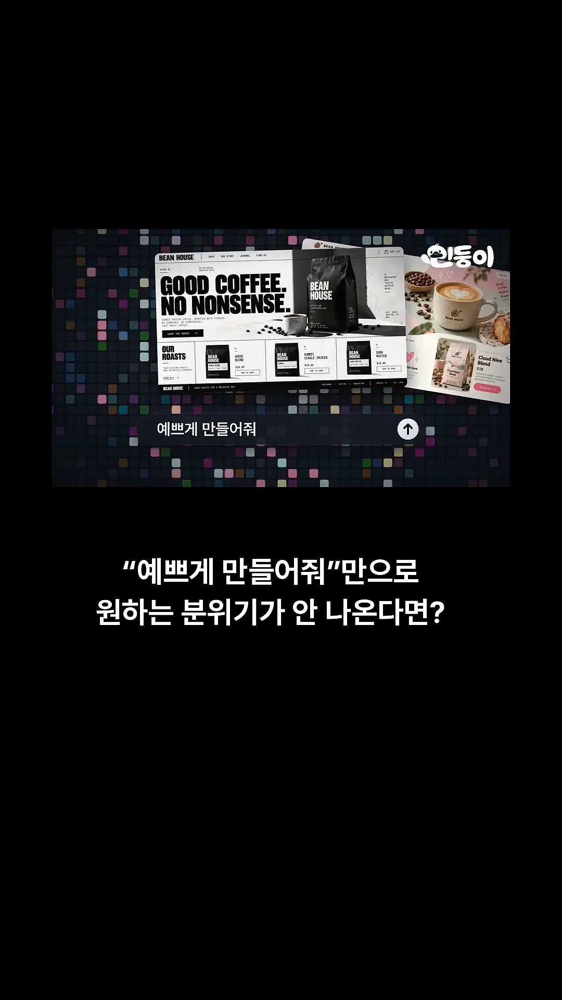
앤트로픽 공식 스킬은 만들기 전에 디자인 방향부터 세우게 해요. 화면에 나온 스킬 원문을 보면 두 번에 나눠 일하라고 해요. 먼저 색, 글꼴, 배치, 원칙을 담은 짧은 디자인 계획을 세우고, 그 계획이 어디서나 나올 법한 흔한 기본값은 아닌지 요구 사항과 견줘 본 뒤에 만들어요. 노란색으로 강조된 줄이 색 규칙이에요. 핵심 색을 이름 붙인 hex 값 4~6개로 정하라고 적혀 있어요.
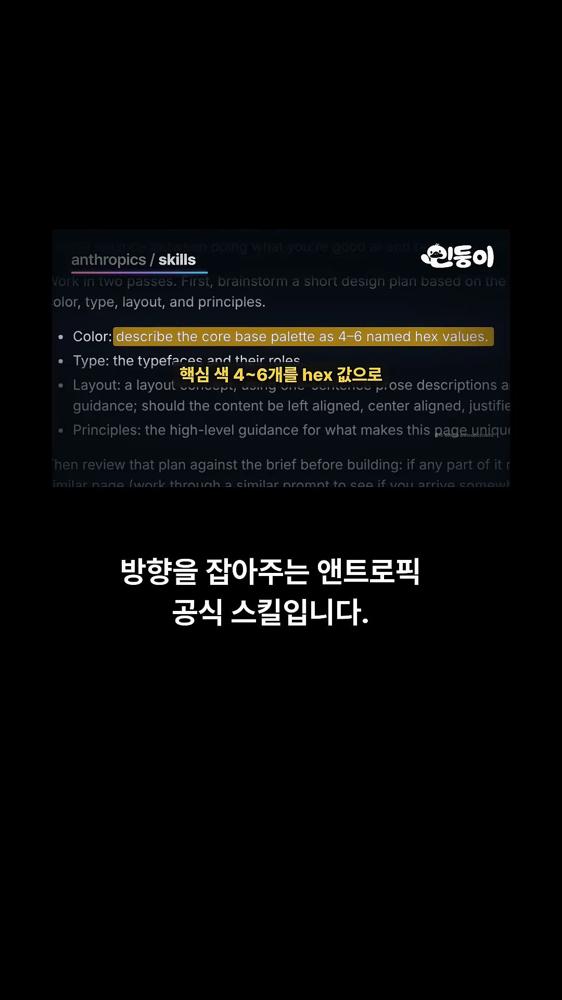
1위 어썸 오퍼스 5.5 비디오스 — 예시에서 시작하기
1위는 스킬이 아니라 자료 모음이에요. 영상은 '지금 보이는 이런 모션 그래픽, 어떻게 시켰는지 궁금하죠?'라며 이 쇼츠의 화면 하나를 열어 보여 줘요. 왼쪽은 s09-b01.html 파일의 코드예요. .cell이라는 칸들을 크기 0에서 1로 키우면서 0.02초씩 시차(stagger)를 두는 내용이에요. 오른쪽에는 그 코드로 그린 '1위' 화면과 시간 막대가 있어요.
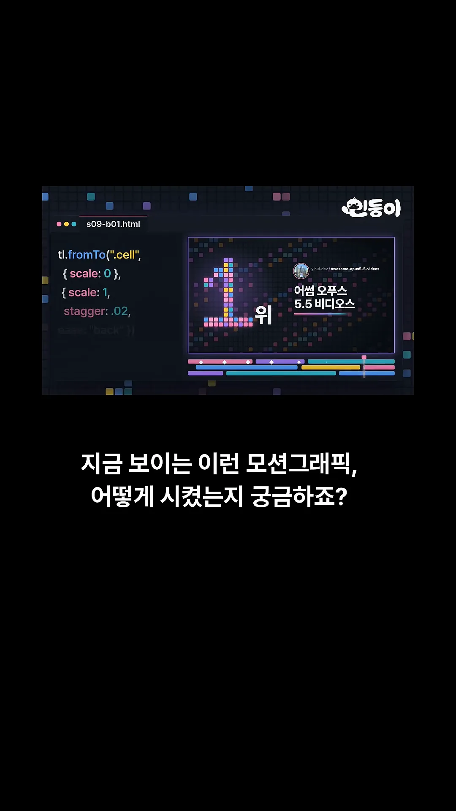
저장소에는 Claude로 만든 영상과 그때 쓴 프롬프트가 함께 모여 있어요. 화면을 빽빽하게 채운 작은 썸네일 하나하나가 그런 영상이에요.

영상이 말하는 쓰임은 이거예요. '멋있게 만들어'라고 막연하게 쓰는 대신, 마음에 드는 예시를 골라 그 프롬프트에서 출발하는 거예요. 화면 속 입력창에는 '금빛 고리가 빛을 내며 천천히 회전하는 10초 모션그래픽'처럼 대상, 색, 움직임, 길이가 다 들어간 문장이 적혀 있고, 위에 그 결과인 금빛 픽셀 고리가 떠 있어요.
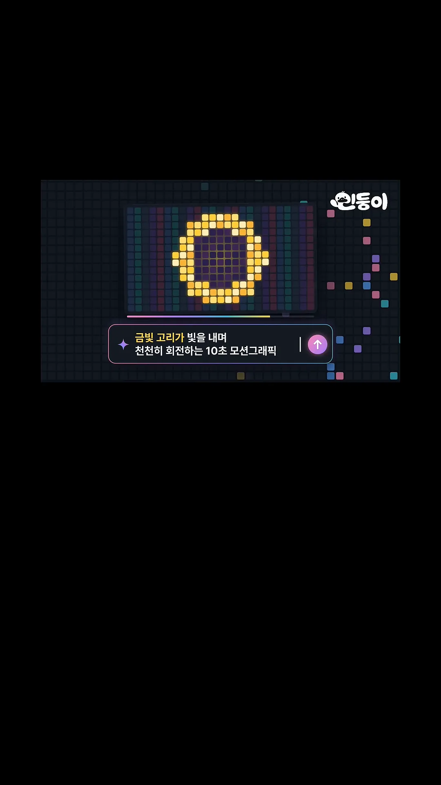